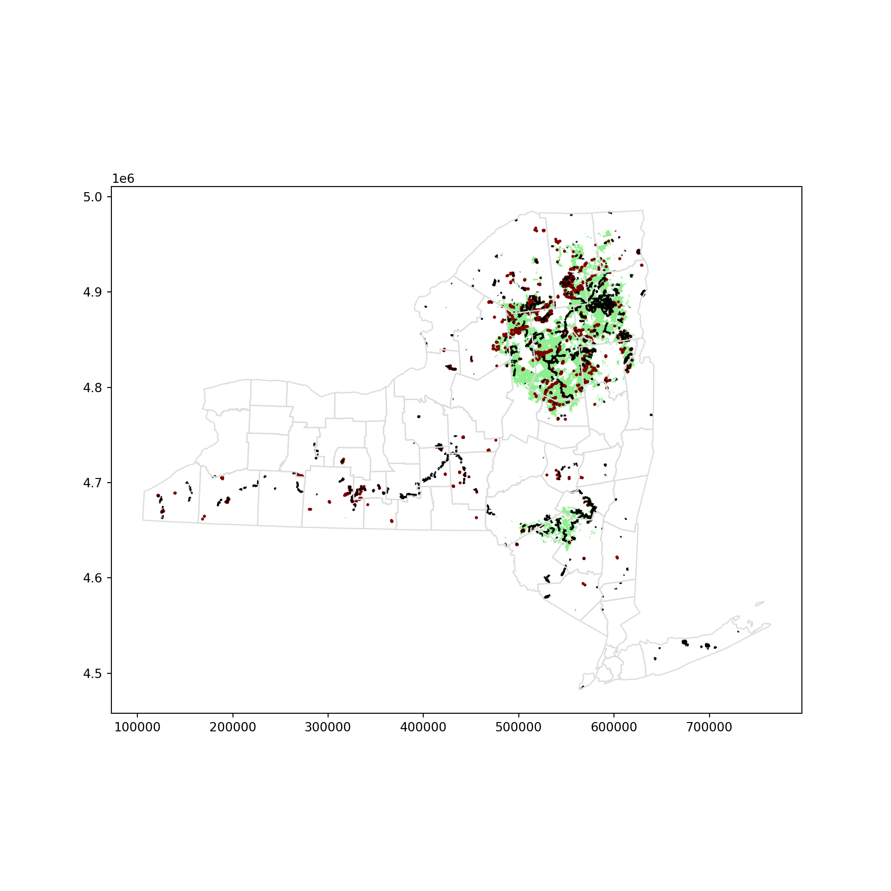
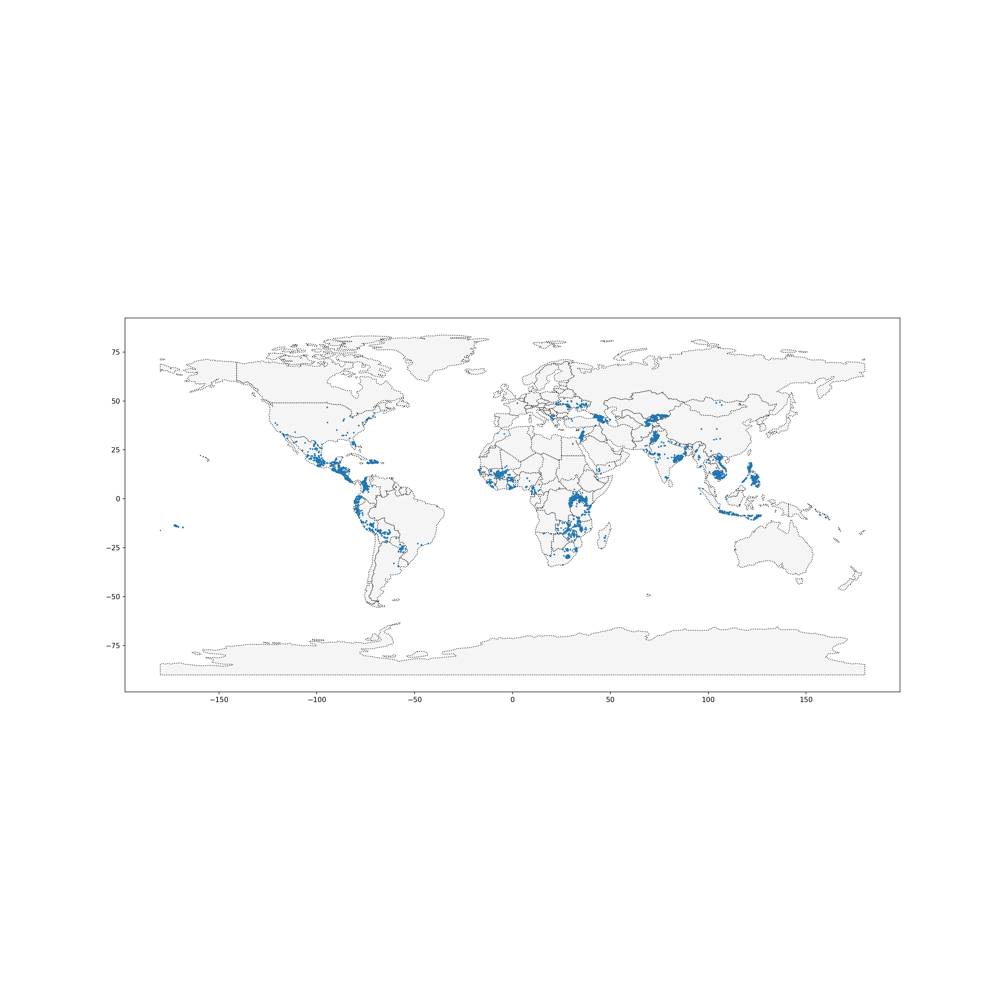
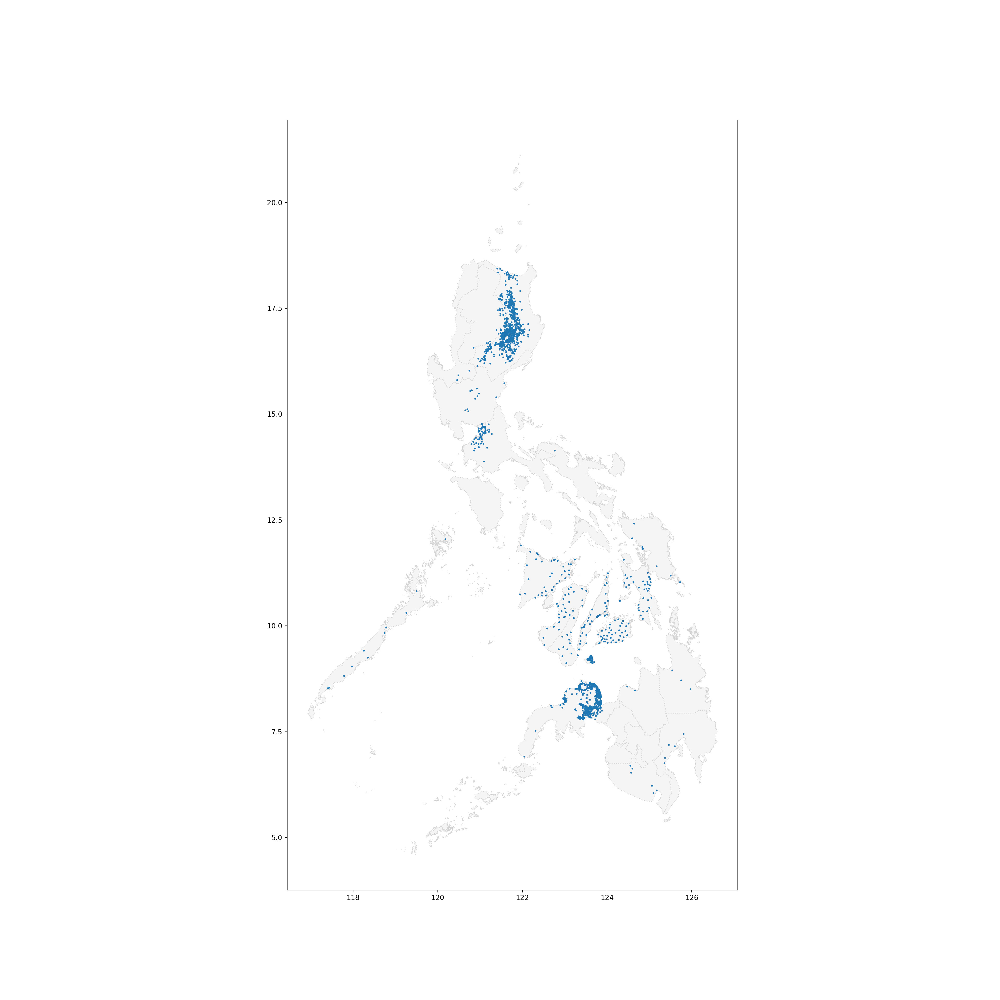

Your first map
Introduction
이 교육 과정에서는 지리적 위치가 있는 데이터, 또는 지리 공간 데이터를 랭글링하고 시각화하는 다양한 방법에 대해 알아봅니다.
그 과정에서 다음과 같은 몇 가지 실제 문제에 대한 해결책을 제시합니다:
글로벌 비영리 단체가 필리핀의 외딴 지역에서 활동 범위를 어디로 확장해야 할까요?
멸종 위기 조류인 Purple Martins는 북미와 남미를 어떻게 이동하는가? 새들이 보호 지역으로 이동하는가?
일본의 어느 지역이 추가 내진 보강의 혜택을 받을 수 있을까요?
캘리포니아의 어떤 스타벅스 매장이 다음 스타벅스 리저브 로스터리 매장으로 유력한 후보지인가요?
뉴욕시에는 자동차 충돌 사고에 대응할 수 있는 충분한 병원이 있나요?
뉴욕시에서 의료 서비스 제공에 공백이 있는 지역은 어디일까요?
또한 보스턴시의 범죄를 시각화하고, 가나의 의료 시설을 조사하고, 유럽의 최고 대학을 탐색하고, 미국의 독성 화학물질 방출을 추적할 수 있습니다.
이 첫 번째 튜토리얼에서는 이 교육 과정을 완료하는 데 필요한 전제 조건을 빠르게 다룹니다. 더 깊이 있는 복습을 원하신다면 Pandas micro-course를 추천합니다.
Reading data
첫 번째 단계는 지리공간 데이터를 읽어오는 것입니다! 이를 위해 GeoPandas 라이브러리를 사용합니다.
import geopandas as gpdC:\Users\sungi\PYTHON~1\Lib\site-packages\geopandas\_compat.py:123: UserWarning: The Shapely GEOS version (3.10.1-CAPI-1.16.0) is incompatible with the GEOS version PyGEOS was compiled with (3.10.4-CAPI-1.16.2). Conversions between both will be slow.
warnings.warn(SHAPELY_GEOS_VERSION, GEOS_CAPI_VERSION_STRING, shapefile, GeoJSON, KML, GPKG 등 다양한 지리공간 파일 형식이 있습니다. 이 강좌에서는 그 차이점에 대해서는 다루지 않겠지만, 언급하는 것이 중요합니다:
shapefile은 가장 흔한 파일 유형입니다.이러한 모든 파일 유형은
gpd.read_file()함수를 사용하여 빠르게 로드할 수 있습니다.
다음 코드 셀은 뉴욕주 환경보전국에서 관리하는 숲, 야생지대 및 기타 토지에 대한 정보가 포함된 모양 파일을 로드합니다.
# Read in the data
full_data = gpd.read_file("C:/archive/DEC_lands/DEC_lands/DEC_lands.shp")
# View the first five rows of the data
full_data.head() OBJECTID ... geometry
0 1 ... POLYGON ((486093.245 4635308.586, 486787.235 4...
1 2 ... POLYGON ((491931.514 4637416.256, 491305.424 4...
2 3 ... POLYGON ((486000.287 4635834.453, 485007.550 4...
3 4 ... POLYGON ((541716.775 4675243.268, 541217.579 4...
4 6 ... POLYGON ((583896.043 4909643.187, 583891.200 4...
[5 rows x 19 columns]CLASS 열에서 볼 수 있듯이 처음 5개의 행은 각각 다른 forest에 해당합니다.
이 튜토리얼의 나머지 부분에서는 이 데이터를 사용하여 주말 캠핑 여행을 계획하려는 시나리오를 고려해 보겠습니다. 온라인에서 크라우드 소싱된 리뷰에 의존하는 대신, 자신만의 지도를 만들기로 결정합니다. 이렇게 하면 특정 관심사에 맞게 여행을 조정할 수 있습니다.
Prerequisites
데이터의 처음 다섯 행을 보기 위해 head() 메서드를 사용했습니다. 이 메서드는 판다스 데이터프레임을 미리 볼 때도 사용한다는 것을 기억하실 것입니다. 사실, 데이터프레임에 사용할 수 있는 모든 명령은 데이터와 함께 작동합니다.
type(full_data)<class 'geopandas.geodataframe.GeoDataFrame'>예를 들어, 모든 열을 사용하지 않으려는 경우 열의 하위 집합을 선택할 수 있습니다.
data = full_data.loc[:,["CLASS","COUNTY","geometry"]].copy()value_counts() 메서드를 사용하여 다양한 토지 유형 목록과 해당 유형이 데이터 집합에 나타나는 횟수를 확인합니다.
data["CLASS"].value_counts()WILD FOREST 965
INTENSIVE USE 108
PRIMITIVE 60
WILDERNESS 52
ADMINISTRATIVE 17
UNCLASSIFIED 7
HISTORIC 5
PRIMITIVE BICYCLE CORRIDOR 4
CANOE AREA 1
Name: CLASS, dtype: int64loc(및 iloc) 및 isin을 사용하여 데이터의 하위 집합을 선택할 수도 있습니다.
# Select lands that fall under the "WILD FOREST" or "WILDERNESS" category
wild_lands = data.loc[data.CLASS.isin(['WILD FOREST', 'WILDERNESS'])].copy()
wild_lands.head() CLASS COUNTY geometry
0 WILD FOREST DELAWARE POLYGON ((486093.245 4635308.586, 486787.235 4...
1 WILD FOREST DELAWARE POLYGON ((491931.514 4637416.256, 491305.424 4...
2 WILD FOREST DELAWARE POLYGON ((486000.287 4635834.453, 485007.550 4...
3 WILD FOREST GREENE POLYGON ((541716.775 4675243.268, 541217.579 4...
4 WILD FOREST ESSEX POLYGON ((583896.043 4909643.187, 583891.200 4...Create your first map!
plot() 메서드를 사용하여 데이터를 빠르게 시각화할 수 있습니다.
wild_lands.plot()
모든 GeoDataFrame에는 특별한 “기하 도형” 열이 포함되어 있습니다. 이 열에는 plot() 메서드를 호출할 때 표시되는 모든 기하학적 개체가 포함됩니다.
이 열에는 다양한 데이터 유형이 포함될 수 있지만, 각 항목은 일반적으로 Point, LineString, 또는 Polygon입니다.
데이터의 ‘geometry’ 열에는 2983개의 서로 다른 폴리곤 개체가 포함되어 있으며, 각 개체는 위 플롯에서 서로 다른 모양에 해당합니다.
# Campsites in New York state (Point)
POI_data = gpd.read_file("C:/archive/DEC_pointsinterest/DEC_pointsinterest/Decptsofinterest.shp")
campsites = POI_data.loc[POI_data.ASSET=='PRIMITIVE CAMPSITE'].copy()
# Foot trails in New York state (LineString)
roads_trails = gpd.read_file("C:/archive/DEC_roadstrails/DEC_roadstrails/Decroadstrails.shp")
trails = roads_trails.loc[roads_trails.ASSET=='FOOT TRAIL'].copy()
# County boundaries in New York state (Polygon)
counties = gpd.read_file("C:/archive/NY_county_boundaries/NY_county_boundaries/NY_county_boundaries.shp")다음으로, 네 개의 지리 데이터프레임으로 맵을 만듭니다.
plot() 메서드는 모양을 사용자 지정하는 데 사용할 수 있는 몇 가지 매개 변수를 (optional) 입력으로 받습니다. 가장 중요한 것은 ax 값을 설정하면 모든 정보가 동일한 맵에 그려진다는 것입니다.
# Define a base map with county boundaries
ax = counties.plot(figsize=(10,10), color='none', edgecolor='gainsboro', zorder=3)
# Add wild lands, campsites, and foot trails to the base map
wild_lands.plot(color='lightgreen', ax=ax)
campsites.plot(color='maroon', markersize=2, ax=ax)
trails.plot(color='black', markersize=1, ax=ax)
주 북동부 지역은 캠핑 여행에 좋은 선택이 될 것 같습니다!
Your turn
처음에는 복잡하게 느껴지겠지만, 이미 중요한 분석을 수행할 수 있을 만큼 충분히 배웠을 것입니다. 비영리 단체가 사업을 확장할 수 있는 필리핀의 외딴 지역을 직접 찾아보세요.
Get data
world_loans = gpd.read_file("C:/archive/kiva_loans/kiva_loans/kiva_loans.shp")
world_loans.head() Partner ID ... geometry
0 9 ... POINT (102.89751 13.66726)
1 9 ... POINT (102.98962 13.02870)
2 9 ... POINT (102.98962 13.02870)
3 9 ... POINT (105.31312 12.09829)
4 9 ... POINT (105.31312 12.09829)
[5 rows x 7 columns]Plot the data
world_filepath = gpd.datasets.get_path("naturalearth_lowres")
world = gpd.read_file(world_filepath)
world.head() pop_est ... geometry
0 889953.0 ... MULTIPOLYGON (((180.00000 -16.06713, 180.00000...
1 58005463.0 ... POLYGON ((33.90371 -0.95000, 34.07262 -1.05982...
2 603253.0 ... POLYGON ((-8.66559 27.65643, -8.66512 27.58948...
3 37589262.0 ... MULTIPOLYGON (((-122.84000 49.00000, -122.9742...
4 328239523.0 ... MULTIPOLYGON (((-122.84000 49.00000, -120.0000...
[5 rows x 6 columns]ax = world.plot(figsize = (20,20),color = "whitesmoke",linestyle=":",edgecolor = "black")
world_loans.plot(ax=ax, markersize=2)
Selct loans based in the philippines
PHL_loans = world_loans.loc[world_loans["country"]=="Philippines"]
PHL_loans.head() Partner ID ... geometry
2859 123 ... POINT (121.73961 17.64228)
2860 123 ... POINT (121.74169 17.63235)
2861 123 ... POINT (121.46667 16.60000)
2862 123 ... POINT (121.73333 17.83333)
2863 123 ... POINT (121.51800 16.72368)
[5 rows x 7 columns]Understand loans in the Philippines
gpd.io.file.fiona.drvsupport.supported_drivers["KML"] = "rw"
PHL = gpd.read_file("C:/archive/Philippines_AL258.kml",driver = "KML")
PHL.head() Name ... geometry
0 Autonomous Region in Muslim Mindanao ... MULTIPOLYGON (((119.46690 4.58718, 119.46653 4...
1 Bicol Region ... MULTIPOLYGON (((124.04577 11.57862, 124.04594 ...
2 Cagayan Valley ... MULTIPOLYGON (((122.51581 17.04436, 122.51568 ...
3 Calabarzon ... MULTIPOLYGON (((120.49202 14.05403, 120.49201 ...
4 Caraga ... MULTIPOLYGON (((126.45401 8.24400, 126.45407 8...
[5 rows x 3 columns]ax = PHL.plot(figsize = (20,20),color = "whitesmoke",linestyle=":",edgecolor = "lightgray")
PHL_loans.plot(ax=ax, markersize = 2)